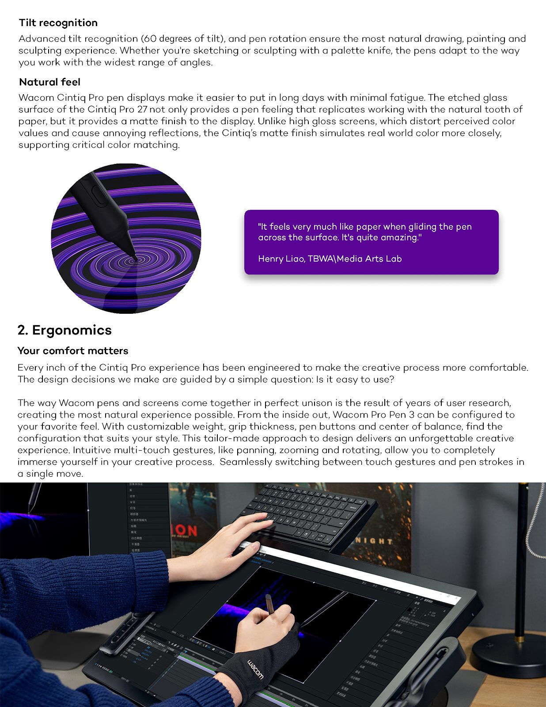
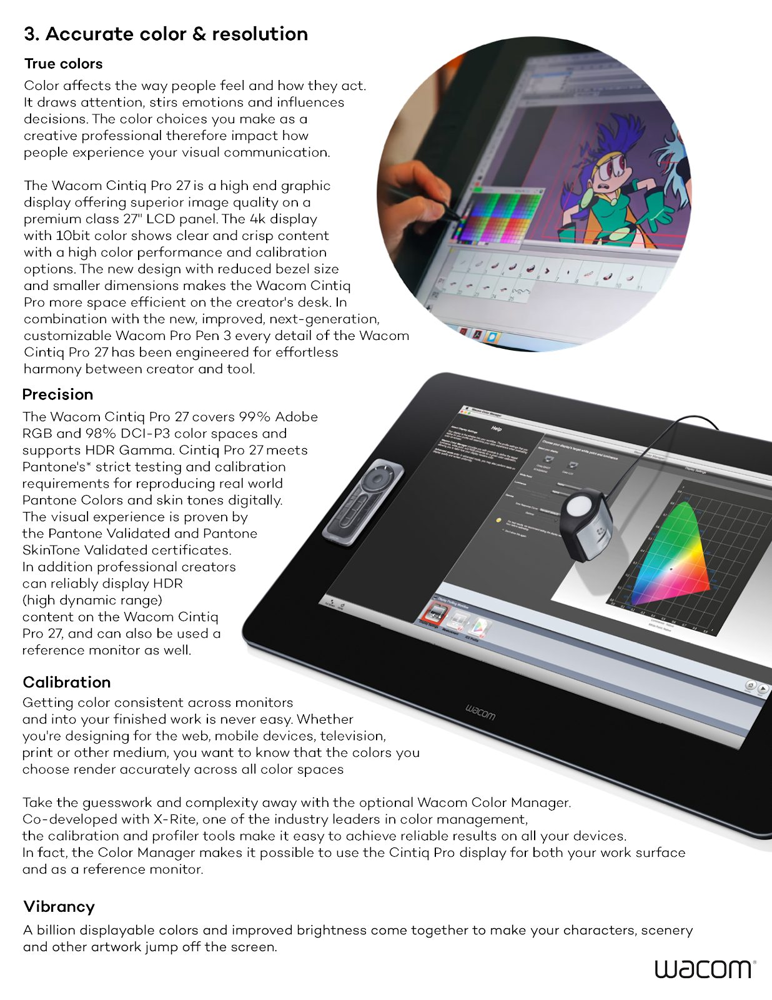
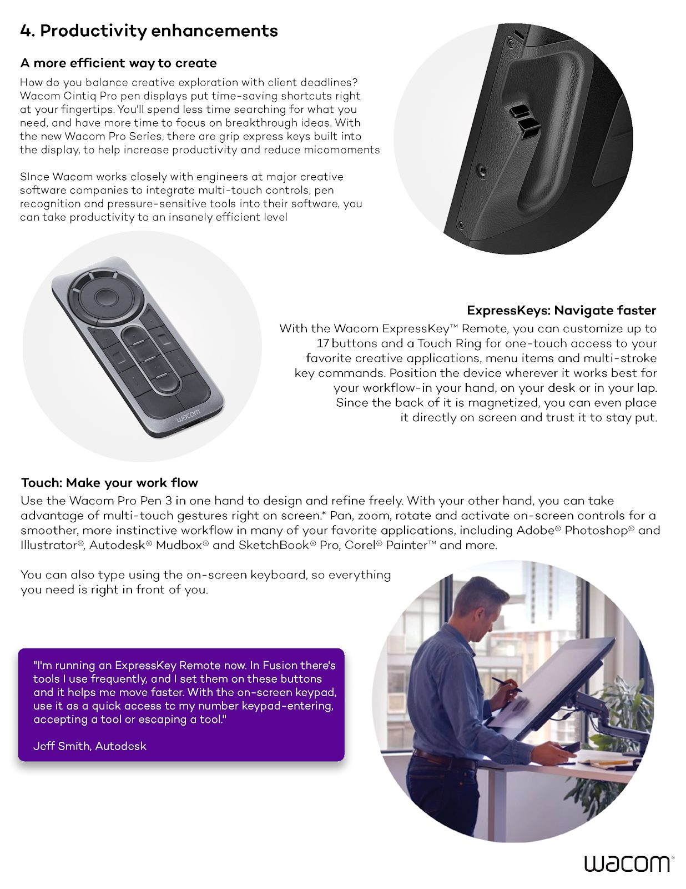
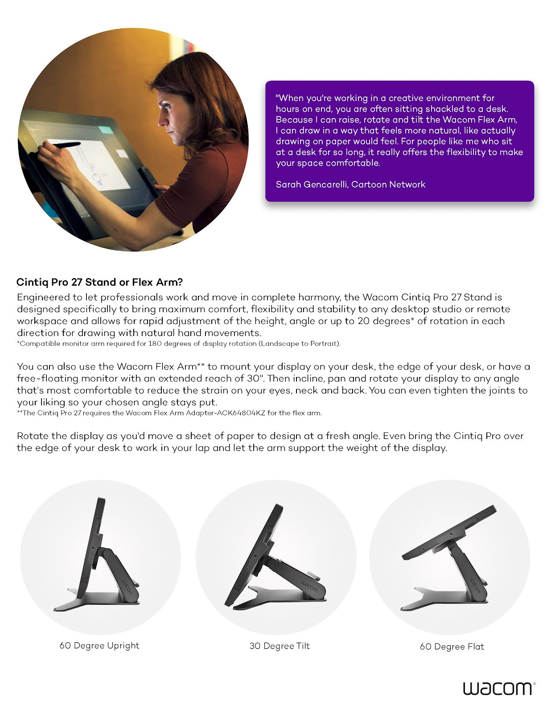
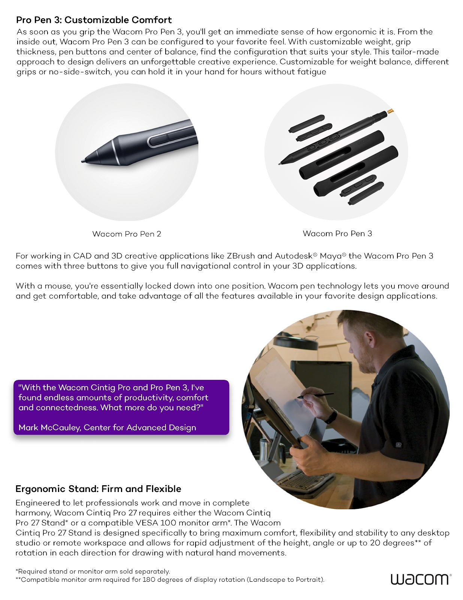

Campaign & Content Wacom
Wacom

Services
Lead Generation, Content Creation, Marketing Strategy, SEO Optimization, Analytics Reporting, A/B Testing, Email Marketing, Paid Media Management, Social Media Advertising, Influencer Partnerships, Campaign Development, Audience Segmentation, Marketing Automation, Conversion Rate Optimization, Sales Funnel Management, Customer Journey Mapping, and Data-Driven Insights.

Webinar Marketing
At Wacom, I developed a comprehensive webinar marketing strategy that included creating engaging banners, emails, and social media content to drive webinar attendance. Each campaign was designed to capture the attention of both new and existing audiences, ensuring high turnout rates.
Post-webinar, I crafted follow-up emails that included links to dedicated landing pages where attendees could access full replays, download resources, and view detailed answers to all the questions from the webinar. This multi-faceted approach ensured continued engagement, provided value to the audience, and strengthened Wacom's relationship with potential and existing customers.
Social Media Banners & Email Headers
I designed eye-catching social banners and email headers using artist's works to promote our webinars, ensuring consistency across all platforms. These creative assets were tailored to grab attention, convey the webinar's key takeaways, and encourage sign-ups. By using bold visuals and clear messaging, the banners and headers effectively communicated the value of attending the webinars, increasing click-through rates and driving higher registration numbers. This cohesive design approach played a key role in the success of our webinar promotion campaigns, helping to boost both attendance and engagement.

Video Clips
I created targeted video clips using images within Wacom's catalog for enterprise sales reps to use in email promotions, helping to drive engagement and interest in specific products. These concise, impactful videos were designed to highlight key features and benefits, making them valuable assets for personalized outreach and improving conversion rates.
Social Media
I utilized the brand's extensive catalog of high-quality images to create engaging motion graphic GIFs for social media marketing efforts. By transforming static images into dynamic and visually compelling GIFs, I helped bring attention to Wacom's products in a fresh and innovative way. These GIFs were designed to showcase the brand's creativity and product functionality, increasing engagement and interaction across platforms. This strategy enhanced Wacom's social media presence and strengthened its connection with both creative professionals and consumers.

Sizzle Reel
For the launch of a new product at Wacom, I created an engaging sizzle reel that combined stock video footage with Wacom's own animation sections to highlight the product's key features and capabilities. This high-energy video was designed to captivate the audience and generate excitement at the product launch party held at Orbital Studios. The sizzle reel showcased the innovative aspects of the new product in a visually dynamic way, leaving a lasting impression and enhancing the overall impact of the event.
Rotoscoping Out Old Product Names
I tackled the challenge of updating old product guides, menus, and naming conventions from previous how-to videos through a meticulous process of rotoscoping. This involved going frame by frame to carefully remove outdated elements and overlay new, accurate information. The complexity of maintaining seamless motion while replacing previous menus and names required precision and attention to detail. By successfully executing this task, I ensured that the content remained up-to-date without the need for complete re-shoots, saving both time and resources while maintaining high production quality.

Rewriting & Designing PDFs
I revitalized outdated PDFs and brochures by rewriting and redesigning them with updated product information, modern layouts, and fresh visuals from Wacom's catalog of images. I transformed these materials into engaging, visually appealing one-sheets that better communicated the brand's offerings. By integrating current product details and dynamic images, I enhanced the overall readability and appeal of the content, creating effective marketing tools that aligned with Wacom's modern brand identity and supported sales efforts.
40% increase in qualified B2B leads via AI-enhanced nurture funnels and demand generation
Automated webinar and email activation flows that compressed the sales cycle
Demand-generation engine built for Wacom's creative-professional audience
Sales-enablement video and motion-graphic content built from the product catalog
Want this kind of work on your brand?
If your brand should be working harder than it is, this is where it starts. One direct conversation.